Photos taken from one spot while the camera turns are related by
a homography, a 3 × 3 matrix. Part A recovers it from
hand-picked correspondences, then uses it to rectify planes, warp
images into a shared frame, feather them into mosaics, and finally
wrap a 117° view onto a cylinder.
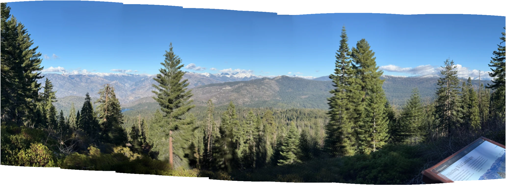
0°15°30°45°60°75°90°105°
Nine handheld photos, 117° of horizon, projected onto a cylinder of radius 1010 px (A.5). The ruler is exact, since position on the cylinder is proportional to angle, measured from the left edge. Drag or scroll sideways.
One center of projection, many pictures
If the camera only rotates about its optical center, every ray it
records is still the same ray in the next photo. Only the image plane
has turned. Two pinhole images of the same rays differ by a projective
map of the plane, \(p' \sim Hp\), and depth stops mattering.
\[
\begin{bmatrix} wx' \\ wy' \\ w \end{bmatrix}
=
\underbrace{\begin{bmatrix} a & b & c \\ d & e & f \\ g & h & 1 \end{bmatrix}}_{H\;=\;K R K^{-1}}
\begin{bmatrix} x \\ y \\ 1 \end{bmatrix},
\qquad
x' = \frac{ax+by+c}{gx+hy+1},\quad
y' = \frac{dx+ey+f}{gx+hy+1}
\]
The same equation covers a second case: any photo of a flat surface.
That is what rectification uses. The page follows the pipeline in
order: shoot (A.1), estimate \(H\) (A.2), warp with two samplers
(A.3), blend (A.4), and go past what a plane can hold with a
cylinder (A.5). Interactive figures are marked in their captions.
Part A
Image warping and mosaicing
Every result comes from code/main.py with NumPy, and
OpenCV is used only for file I/O, color conversion, and a distance
transform. The extra figures (the equal-weight comparison,
intermediate canvases, timings) come from a separate script that
calls the same functions. The homography solver, both samplers, the blender, and the
cylindrical projection are written by hand; no
findHomography, warpPerspective or
remap. Correspondences were clicked with the course
correspondence tool, 6 to 11 per pair, and saved as JSON.
Part A 1
Shooting the pictures
Three sequences, each shot by turning a handheld camera about its
lens: a forested ridge in the Sierra Nevada panned left to right, a
giant sequoia tilted from its base to its crown, and a room panned
across a corner, from the side wall to the back wall. Neighbors
overlap by about 50–65% in the ridge set and 65–72% in the sequoia
set. The room was shot with smaller turns, 67–82%, so two of its
pairs go past the recommended 40–70%. All images were resized to 512 px wide
before clicking correspondences.
Ridge, panned left to right. Photos 1–5 make the planar mosaic; all nine make the cylindrical panorama.
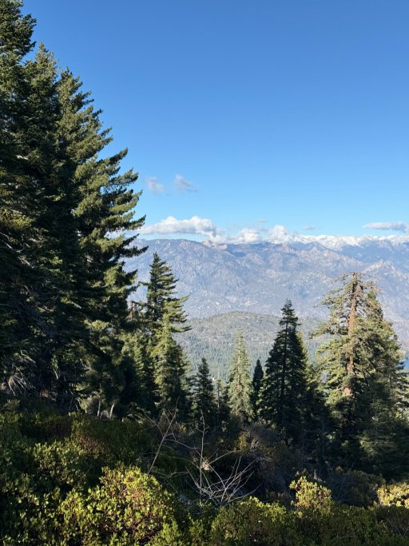
1
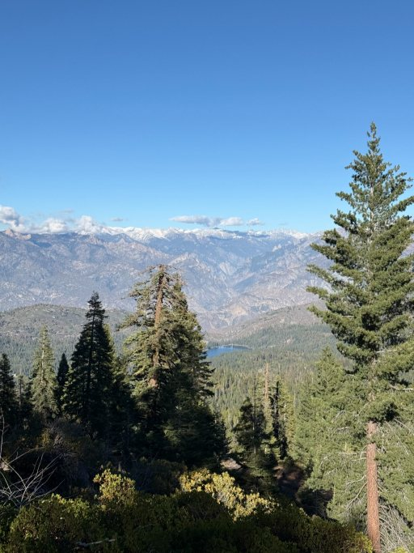
2
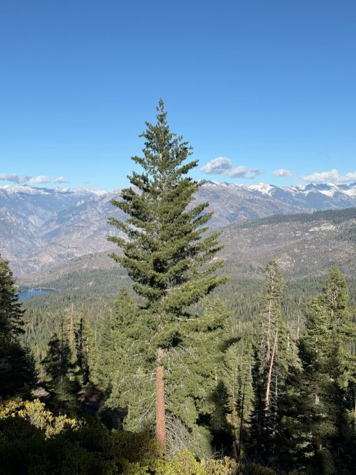
3
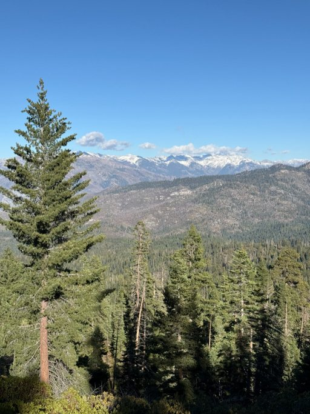
4
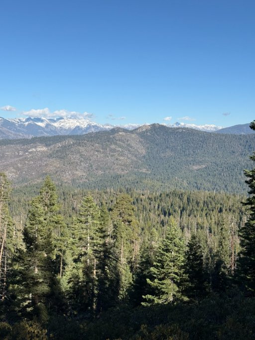
5
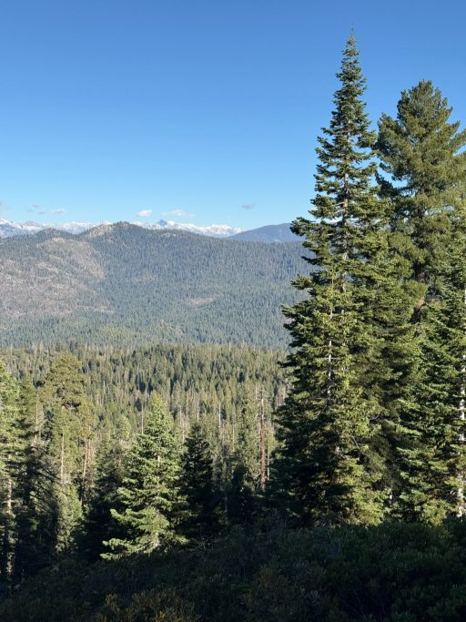
6
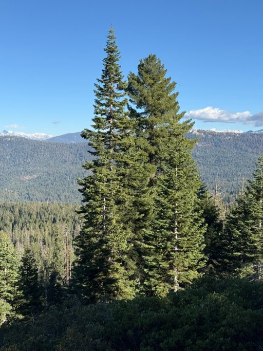
7
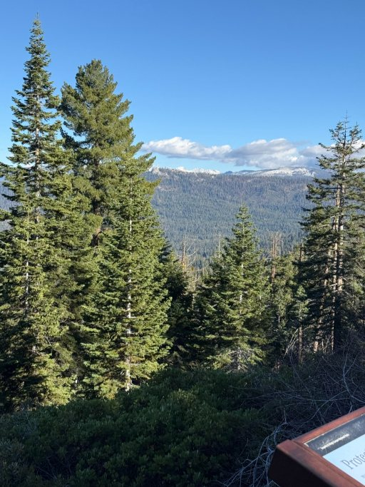
8
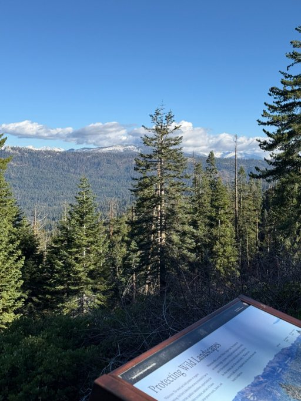
9
Sequoia, tilted bottom to top. Three photos, image 2 is the reference.
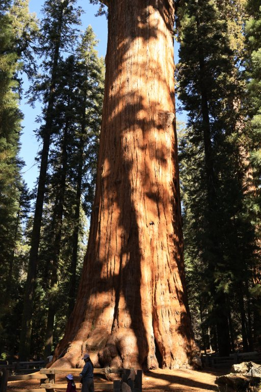
1
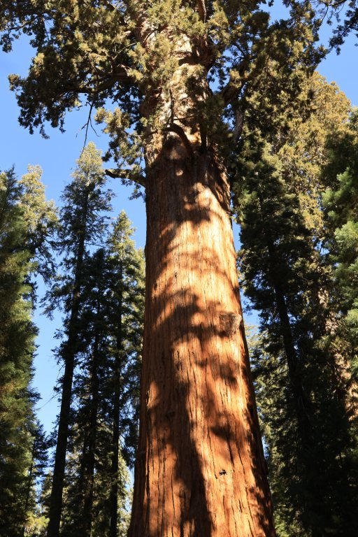
2
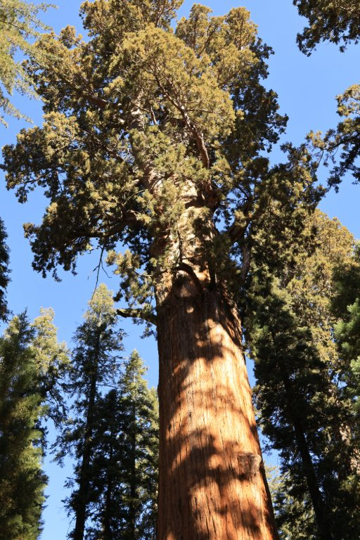
3
Room, panned left to right with a wide lens. Five photos, image 3 is the reference.
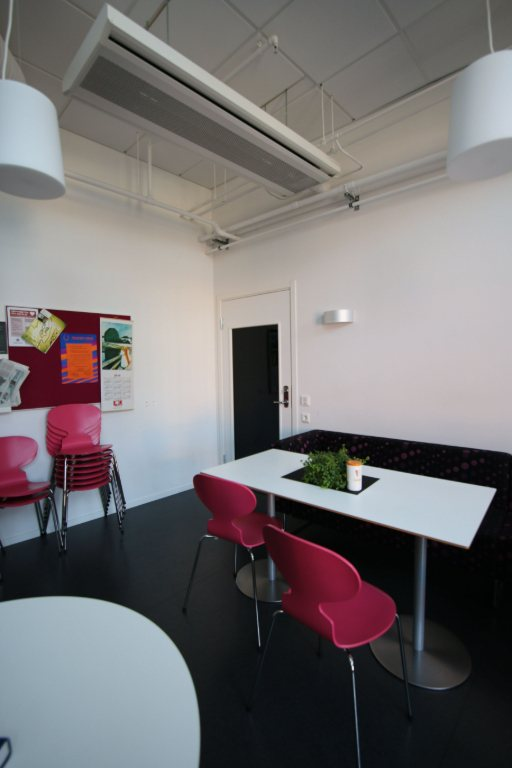
1
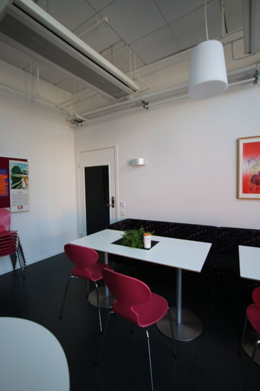
2
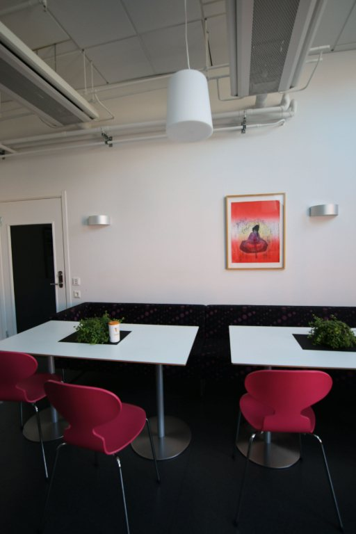
3
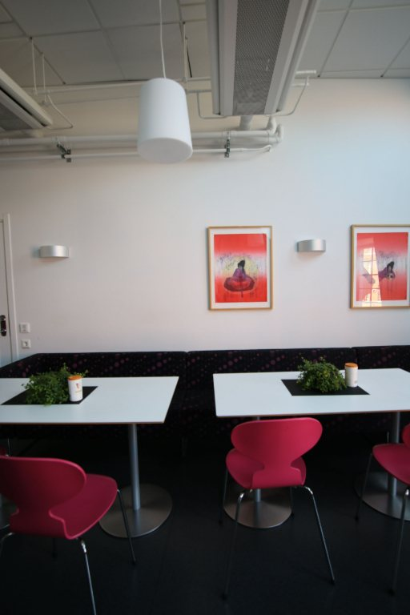
4
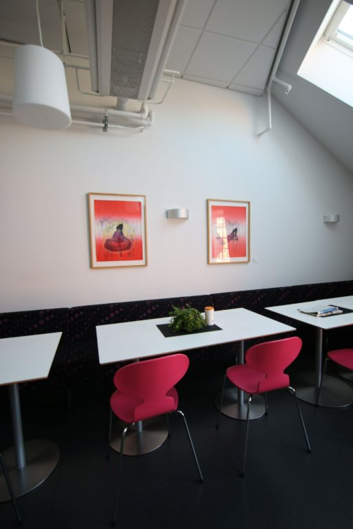
5
A handheld camera does not rotate exactly about its optical center.
Distant scenery tolerates that: a few centimeters of drift is tiny
next to a mountain kilometers away. Nearby objects do not. They are
the main place the mosaics below fail: the lower branches of the near
pine in the middle of the ridge mosaics, and the chairs in the
room. The other risk is correspondences that do not cover the
overlap, covered in A.4.
Part A 2
Recovering homographies
Each correspondence \((x,y)\mapsto(u,v)\) gives two equations that
are linear in the nine entries of \(H\) once the denominator is
multiplied out. Stacking \(n\) pairs gives a \(2n\times 9\) system.
With four points the system has an exact one-dimensional null space.
With more, noise makes it full rank, so computeH solves
the least-squares problem \(\min\lVert Ah\rVert\) subject to
\(\lVert h\rVert=1\). The answer is the right singular vector of
\(A\) with the smallest singular value. It is then rescaled so
\(h_{33}=1\), the same eight-parameter form as the spec's
\(Ah=b\). The fit itself differs slightly, because no entry is
fixed while solving. On these pairs the two agree to within
0.001 px.
def computeH(img1_pts, img2_pts):
img1_pts_norm, T1 = normalizePoints(img1_pts) # centroid at 0, mean distance √2
img2_pts_norm, T2 = normalizePoints(img2_pts)
A = [] # two rows per correspondence
for (x, y), (u, v) in zip(img1_pts_norm, img2_pts_norm):
A.append([x, y, 1, 0, 0, 0, -u*x, -u*y, -u])
A.append([0, 0, 0, x, y, 1, -v*x, -v*y, -v])
_, _, Vt = np.linalg.svd(np.asarray(A))
H = np.linalg.inv(T2) @ Vt[-1].reshape(3, 3) @ T1 # undo the normalization
return H / H[2, 2]
Why normalize first
In raw pixels the columns of \(A\) mix 1, coordinates near 500,
and products near 250,000. The ratio between the largest and the
eighth singular value, which sets how much click noise is amplified
into \(h\), has a median of \(4.0\times10^{6}\) over the 14 pairs. After moving
each point set's centroid to the origin and scaling its mean
distance to \(\sqrt2\) (Hartley normalization), the median is
6.6. The fit is done there and mapped back with
\(H=T_2^{-1}\hat H\,T_1\).
Correspondences and the recovered matrices
Pick a pair below. Numbered dots are the clicked points. On the right,
a hollow ring marks where \(H\) sends each left point, and the red
tick from the click to the ring is the residual, drawn 5× longer.
Hover or focus a point to find its partner.
Pair
Interactive. The homography maps the left image into the right one. Its last row carries the perspective terms \(g, h\), small numbers in pixel units that still bend the frame visibly at 500 px.
Reprojection error of every clicked pair (pixels, after the least-squares fit)
Set
Pair
Points
RMSE
Max
Used in
Ridge
1 → 2
11
2.01
3.22
planar + cylinder
Ridge
2 → 3
11
1.40
2.60
planar + cylinder
Ridge
3 → 4
11
1.35
2.12
planar + cylinder
Ridge
4 → 5
11
1.89
5.01
planar + cylinder
Ridge
5 → 6
11
1.40
2.26
cylinder only
Ridge
6 → 7
11
1.57
2.72
cylinder only
Ridge
7 → 8
11
1.11
1.84
cylinder only
Ridge
8 → 9
11
7.28
16.64
cylinder only
Sequoia
1 → 2
6
1.23
2.13
planar
Sequoia
2 → 3
13
0.96
1.99
planar
Room
1 → 2
8
1.33
2.30
planar
Room
2 → 3
8
0.92
1.36
planar
Room
3 → 4
8
0.59
0.89
planar
Room
4 → 5
8
1.14
1.77
planar
Every pair used in a planar mosaic fits to about 2 px RMS or better, about
the precision of a click on a 512 px image. The outlier is the last
ridge pair, 8 → 9, at 7.3 px. Four of its points are on the
wooden sign and railing at the bottom of photo 9, a meter or two
from the lens, three are on mid-distance trees (two on branch tips
of the tall pine in the middle), and the other four are on the
ridgeline and clouds. Template matching puts every click within
2 px of its feature, so these are not clicking errors. A handheld
turn moves the center of projection by a few centimeters, which
shifts the sign against the mountains, and no single homography can
match both. That pair only enters the cylindrical panorama, where
the sign sits at the far edge.
Part A 3
Warping and rectification
Warping is done backwards. The four corners of the source go through
\(H\) to find the output bounding box. Then every output pixel is sent
through \(H^{-1}\) to a real-valued location in the source, and a
sampler decides what color lives there. Going backwards means every
output pixel gets exactly one value, with no holes. Pixel
\((0,0)\) is the center of the first pixel, so a point is inside the
source when \(-0.5\le x<w-0.5\) for nearest neighbor and
\(0\le x\le w-1\) for bilinear. Output pixels that land outside get
alpha 0.
x0, y0 = floor(x), floor(y); dx, dy = x-x0, y-y0
out = (1-dx)(1-dy) I00 + dx(1-dy) I10
+ (1-dx) dy I01 + dx dy I11
Try it: rectify by dragging four corners
Rectification is a homography with a made-up target. Choose four
points that should be the corners of a rectangle, send them to the pixel centers
\((0,0),(w-1,0),(w-1,h-1),(0,h-1)\) of a \(w\times h\) output,
and warp. The demo below runs the same
math in the browser. It solves the 8 × 8 system for the map from the
output rectangle back to your quadrilateral and samples the photo.
Sampler
Interactive. Drag a corner, or focus one with Tab and nudge it with the arrow keys. The output is drawn at low resolution and enlarged, so the two samplers are easy to tell apart. The matrix maps output pixels to source pixels, which is \(H^{-1}\) in the notation above.
USS Hornet strike board, photographed from below, so its bottom edge is wider than its top.
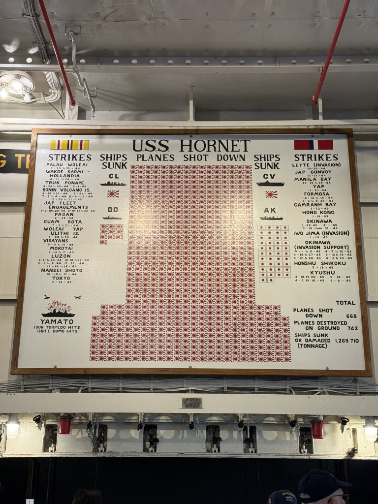
Input with the four clicked corners.
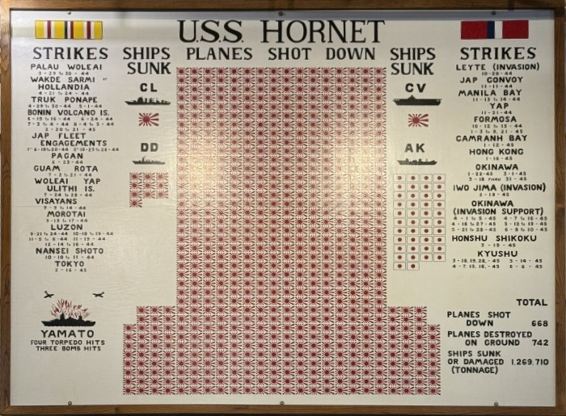
Rectified, bilinear, 700 × 515.
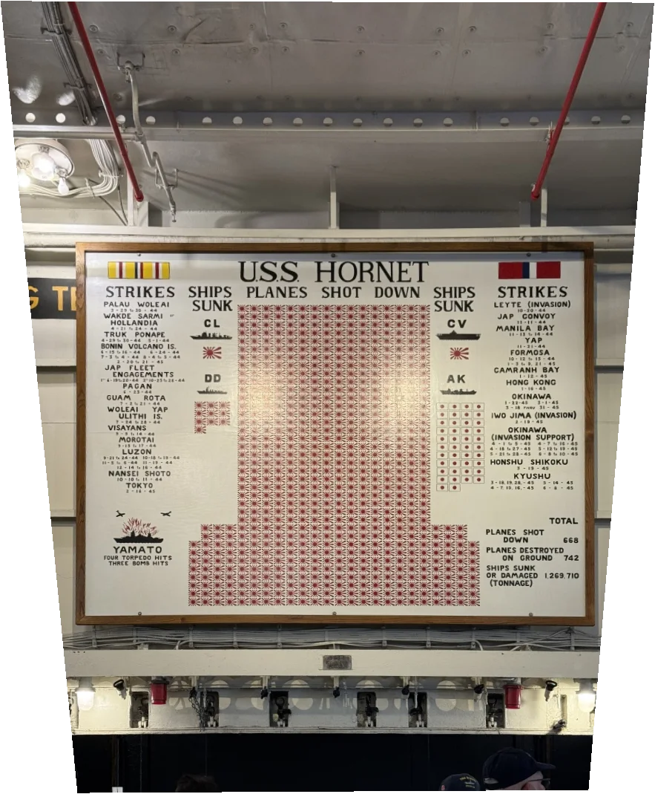
The whole photo through the same \(H\). Everything off that plane is distorted, because \(H\) is only correct for the plane it was fit to.
The board's true aspect ratio is unknown. I estimated it as 1.36 from the photo itself: with the focal length from the EXIF data, the corner homography must factor into a rotation and a translation, and that fixes the width-to-height ratio (it changes by less than 1% between f = 700 and 850 px). The target rectangle is 700 × 515.
Museum placard lying on a display case, shot at a steep angle from above and in front, so its top edge is short and far away.
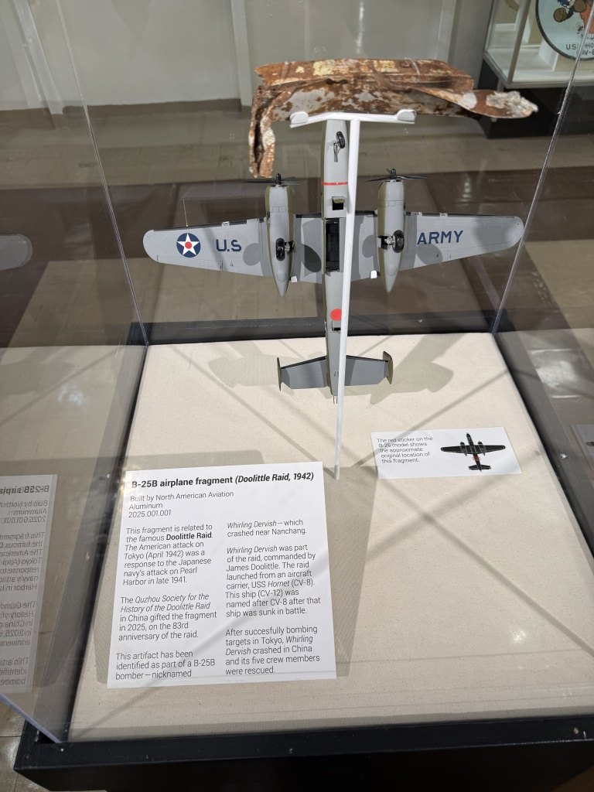
Input with the four clicked corners.Rectified, bilinear, 600 × 590.
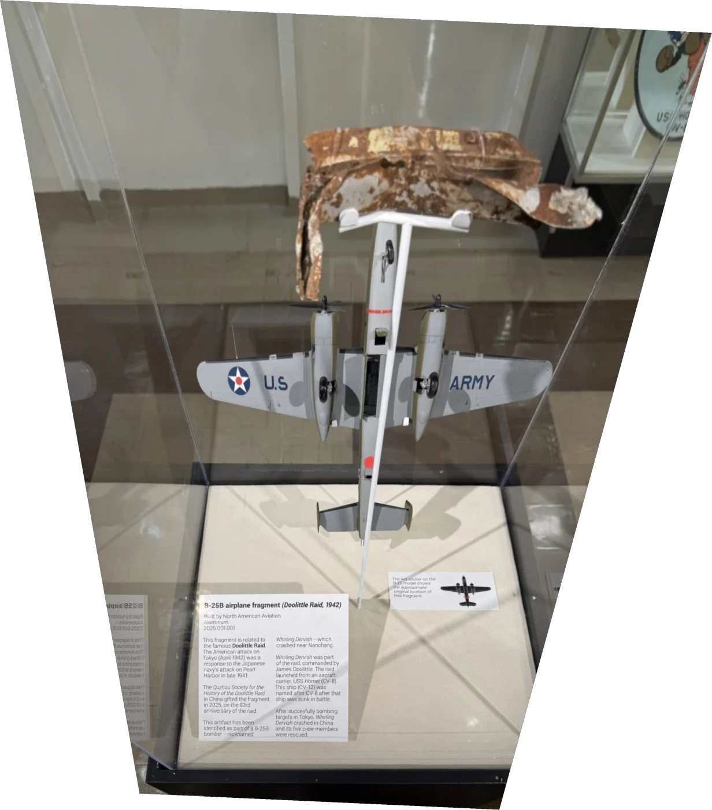
The whole photo through the same \(H\). Everything off that plane is distorted, because \(H\) is only correct for the plane it was fit to.
The placard is nearly square: the same focal-length argument gives an aspect ratio of 1.02 (0.99 to 1.03 for f between 650 and 800 px). The target is 600 × 590. Every row is stretched about 2× vertically (2.4× at the far top edge, 1.8× at the near bottom), so the samplers have to invent more pixels here than for the board.
Nearest neighbor versus bilinear
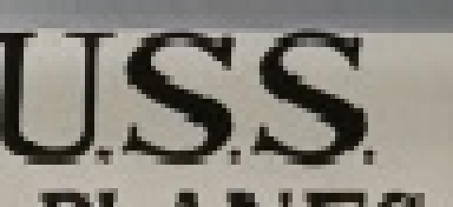
Nearest neighbor: “U.S.S.”, a 96 × 44 px crop enlarged 6×.Bilinear, same crop.
Warp time, median of runs on an Apple M2, NumPy only
Output
Megapixels
Nearest (ms)
Bilinear (ms)
Ratio
350 × 257
0.09
4
13
3.2×
700 × 515
0.36
16
51
3.1×
1400 × 1030
1.44
80
219
2.7×
Speed against quality
Both samplers cost the same inverse mapping. The difference is
the lookup: nearest neighbor reads one pixel, bilinear reads four
and blends them. That makes bilinear about 3× slower
here, and both scale linearly with the number of output pixels.
Nearest neighbor copies each source pixel to a whole block of
output, so lines that should be straight become staircases and
fine repeated patterns shimmer. Bilinear trades that for a slight
blur, because it low-passes the image at subpixel positions. For
mosaics, where every image is resampled and then averaged,
bilinear's blur is invisible and the staircases are not, so every
mosaic uses bilinear.
Part A 4
Blending into a mosaic
Correspondences only exist between neighbors, so stitch
chains them. The middle image is the reference, which keeps the
worst stretching symmetric. Every other image reaches it by
multiplying the neighbor homographies in between, inverting where the
chain runs the other way.
Chain to the reference.\(H_{i\to r}=H_{i+1\to r}\,H_{i\to i+1}\) on the left of the reference and \(H_{i\to r}=H_{i-1\to r}\,H_{i-1\to i}^{-1}\) on the right.
Grow the canvas.Images are added outward from the reference. Each step warps the next image's corners, takes the union with the current mosaic's box, and pre-multiplies a translation so the new top-left is \((0,0)\).
Warp with alpha.The new image and the mosaic so far are both resampled into the new canvas. Color is premultiplied by alpha first, so empty pixels never bleed into edges.
Feather.At each step there are two sources, the new image and the mosaic so far. Each gets a weight from a distance transform of its own coverage: 0 at the edge, rising linearly to 1 at its deepest pixel. Each output pixel is \((w_1c_1+w_2c_2)/(w_1+w_2)\). The mosaic counts as one region, so its weight comes from its outer boundary, not from the photos inside it.
My first version averaged every overlapping pixel with equal
weight. Inside an overlap that is fine. At the overlap's border the
weight jumps from ½ to 1, and any difference in exposure becomes a
visible step. Auto-exposure shifts a little from frame to frame, so
each image's rectangle shows up in the sky. Drag the divider to compare.
Mosaic
Equal weightsFeathered
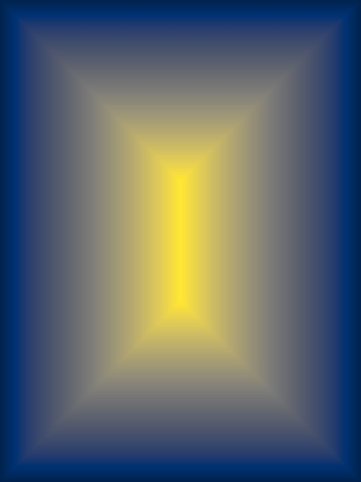
The weight of one 512 × 683 photo, light = 1. The distance transform gives a roof shape: level lines are concentric rectangles, and the ridge runs along the long axis.
Because each weight reaches 0 exactly where its image ends, nothing
changes abruptly at a border. Inside an overlap, whichever source is
deeper inside its own coverage dominates, so the transition is
spread over the full overlap width instead of happening at one
line. Feathering does not fix misregistration, though. If
the two images disagree about where something is, a gentle
crossfade still shows both copies.
How the canvas grows
Step
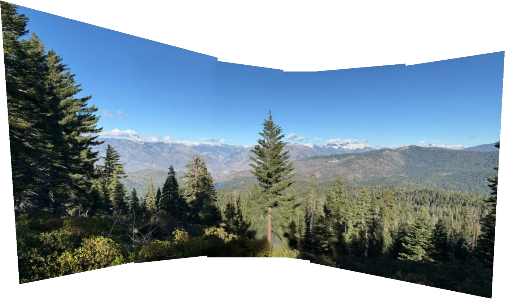
Step 4: warp photo 5 into the frame of reference photo 3, on the right. The canvas grows to hold it, and the old mosaic is shifted, not re-warped.
The ridge sequence has nine photos. The mosaic above uses the
first five. Adding more shows why a plane runs out. A pixel at angle
\(\theta\) from the reference axis lands at \(x=f\tan\theta\) on the
reference plane, and its width is stretched by \(1/\cos^2\theta\).
Halfway to 90° the stretch is already 2×.
Photos
5 photos: canvas 1859 × 1099 (2.0 MP), 72% of it covered.
Planar ridge mosaics: the canvas grows much faster than the content
Photos
Canvas (px)
Megapixels
Covered
5
1859 × 1099
2.0
72%
6
2493 × 1567
3.9
60%
7
2845 × 1567
4.5
59%
8
4031 × 2496
10.1
50%
9
4576 × 2496
11.4
49%
What went right, and what did not
Feathering removed every exposure seam in the three mosaics. The
sky of the ridge and the ceiling of the room are now continuous.
What remains is geometry. My first sequoia mosaic had a doubled
canopy at the upper right. Its six points for photos 2 → 3 all sat
in one band across the middle of the overlap. \(H\) fit them to
0.38 px, but it had to extrapolate into the canopy, where an
independent feature-matching check put it off by about 11 px on
average and up to 74 px. A low error at the clicked points says
nothing about the parts of the overlap without any. I re-clicked
13 points spread over the whole overlap, including the canopy
(0.96 px), and the ghost is gone. The rest is parallax
from handheld drift, which no homography can remove. The lower
branches of the near pine in the middle of the ridge mosaic smear
where neighboring photos overlap. In the room, the chairs and the
right-hand table, a meter or two from the camera, show faint
doubles. Five ridge photos
fill 72% of the planar canvas; nine fill only 49%, and the
outermost trees are smeared several-fold. Beyond about five photos
the plane is the wrong surface, which is where A.5 starts.
Part A 5
Bells & whistles: a cylindrical panorama
A cylinder of radius \(f\) around the camera keeps every horizontal
direction at the same scale. Position along the cylinder is
proportional to angle, so a 360° pan would only need a strip
\(2\pi f\) wide. Each image is projected onto it by inverse sampling,
computing a source position for every cylinder pixel, with the
same bilinear sampler and premultiplied alpha as before.
\[
\theta=\frac{u}{f},\quad
x = f\tan\theta,\quad
y = \frac{v}{\cos\theta}
\qquad\Longleftrightarrow\qquad
u = f\arctan\frac{x}{f},\quad
v = \frac{f\,y}{\sqrt{x^2+f^2}}
\]
After this warp a pure pan is a pure horizontal shift, so each
neighbor pair is aligned by the mean offset of its correspondences,
mapped onto the cylinder, and the same stitch and
feathering run with fit=fitTranslation in place of
computeH. The one free parameter is \(f\) in pixels. I
chose it as the value that makes the cylinder correspondences most
consistent with pure translation.
For each radius, all eight ridge pairs are mapped onto the cylinder and aligned by their best translation. The curve is the RMS distance left over.
The residual drops steeply below 700 px and is nearly flat from 800
to 1200 px, with its minimum of 5.49 px at
\(f=1010\) px. For a 512 × 683 image that is a horizontal
field of view of 28°, a 35 mm equivalent of about 51 mm,
though the flat stretch spans roughly 41–61 mm. That fits a phone's
2× setting (48–52 mm) much better than its 1× main lens (24–26 mm,
which would be \(f\approx 470\)–\(510\) px). Most of the
floor of about 5 px comes from the last pair, 8 → 9 (13.8 px on its
own), where the sign and railing shift against the mountains. The
other seven pairs leave about 2.7 px, the small tilt and roll
between shots that a translation cannot model. Without 8 → 9 the
minimum moves to 900 px, still inside the flat stretch.
A smaller radius bends the photo harder. At \(f=400\) px the top
and bottom edges bow into arcs and the 512 px width shrinks to
456 px, because the edges are squeezed by
\(\arctan(x/f)\). The trunks stay vertical at every radius, since
a cylinder maps vertical lines to vertical lines. At the fitted
radius the photo is barely changed (502 px wide), and that
small correction is enough to make the nine photos chain without
kinks. The full panorama is at the top of the page.
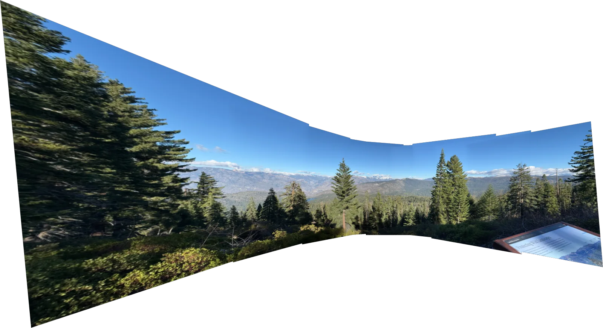
Planar, nine photos: 4576 × 2496, 49% covered.Cylindrical, nine photos: 2062 × 755.
Plane versus cylinder
The planar mosaic of all nine photos needs a 4576 × 2496 canvas
and leaves half of it empty. The cylindrical one is
2062 × 755 with every photo at its native scale. The cost is
that straight lines that are not vertical now curve: the horizon
stays level only because the pan was nearly level. Its staircase
top and bottom edges are the vertical drift of a handheld pan,
which a translation-only model leaves in rather than spreads out.
Part B
Feature matching for autostitching
Part B replaces the clicking with Harris corners, adaptive
non-maximal suppression, MOPS-style descriptors, ratio-test matching
and RANSAC, following Brown et al. The results will be added here,
next to the hand-stitched mosaics above for comparison.
B.1Harris corners, with and without ANMS
B.2Normalized 8 × 8 feature descriptors
B.3Feature matching with Lowe's ratio test
B.44-point RANSAC and automatic mosaics
B.5Bells & whistles
What I learned
The homography is the easy part. Eight numbers fall out of one SVD,
as long as the coordinates are normalized first. Almost everything
that went wrong came from the assumptions around it. The camera has
to turn about its optical center, or nearby objects double. Exposure
changes between frames, so equal-weight blending draws every
rectangle. A plane can only hold so much angle. Each fix (shooting
distant scenes, feathering, a cylinder) answers one of those
assumptions rather than the matrix.